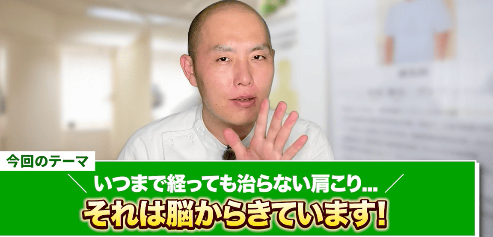
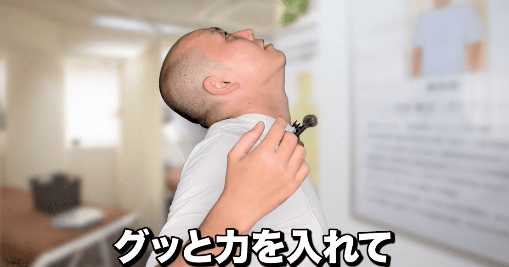
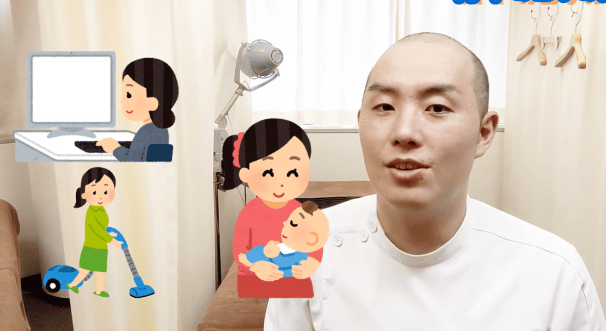
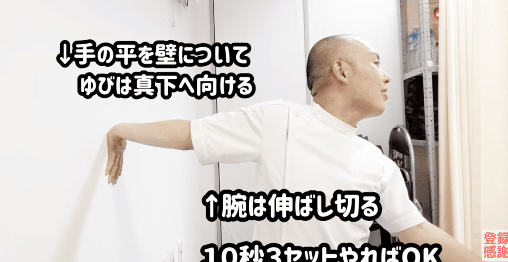
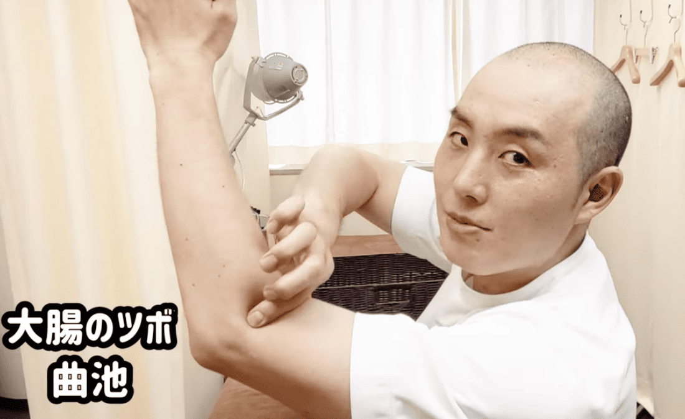
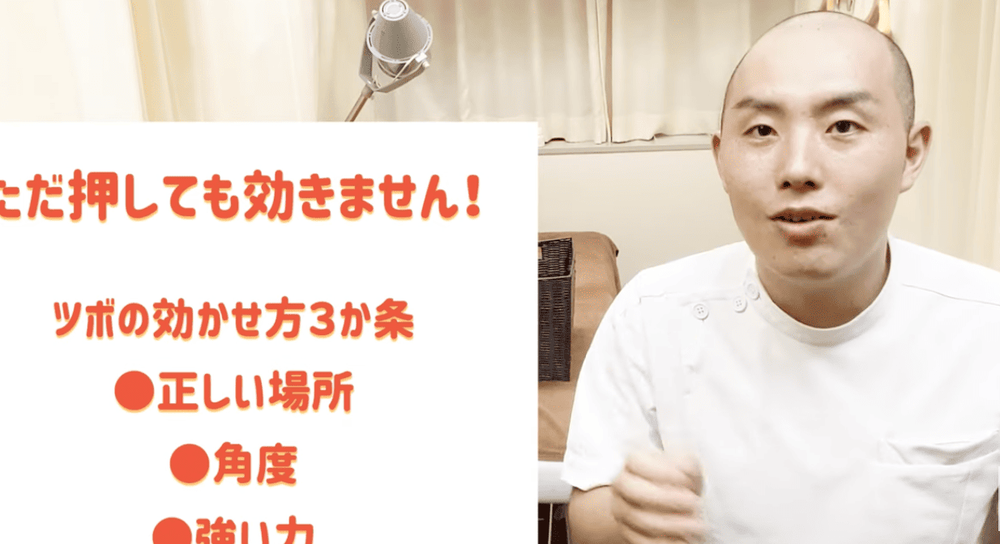
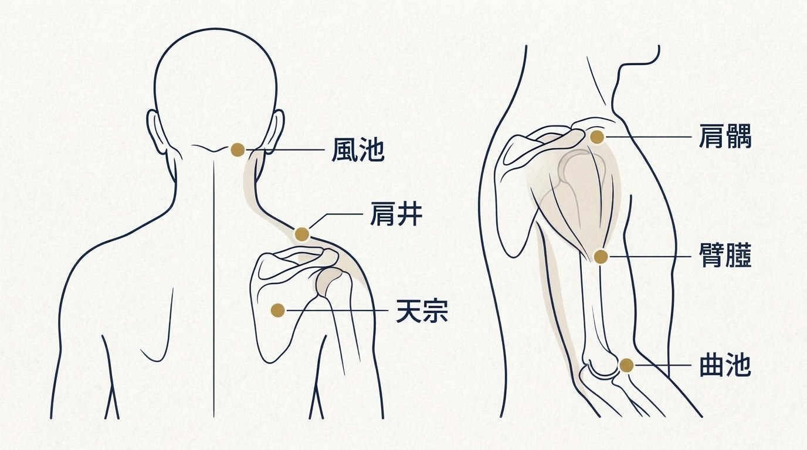

肩こりの鍼灸
頭痛・吐き気を生む慢性肩こりに対し、深層筋へのトリガーポイント鍼灸と脳・自律神経ケアで根本改善する解説。
まず知っておきたい要点と改善の流れ
肩甲骨には17種類もの筋肉が付着しており、前傾姿勢・胸式呼吸のクセ・冷え（東洋医学の寒邪）などで深層筋が硬直します。さらに代表的な僧帽筋は脳神経（副神経）に支配されているため、ストレスや脳疲労がそのまま肩の強い緊張として現れる「オーバーフロー現象」も大きな要因です。（公式解説）
このようなお悩みはありませんか？
- ✓首の後ろから肩・肩甲骨まわりにかけ、重い痛みや鈍痛がずっと続いている
- ✓肩こりがひどくなると、緊張型頭痛や吐き気・目の疲れまで出てくる
- ✓パソコンやスマホの前傾姿勢・ストレートネックで、マッサージを受けてもすぐ戻る
- ✓ストレスや脳の疲労が溜まると一気に肩がガチガチになる
当院の施術アプローチ・改善の流れ
なぜ鍼灸で改善へ向かうのか？（作用機序の図解）
肩こりに対する鍼灸は、トリガーポイント解放と疼痛抑制系の作用機序を通じて、お体本来の回復力を引き出します。

手技では届きにくい深層筋の硬結（トリガーポイント）へ繊細な鍼で直接刺激を届けます。
CGRPや一酸化窒素の放出により微小血管が拡張し、滞っていた発痛物質の洗い流しを促します。
脊髄後角で痛み信号を遮断し、脳幹からの内因性鎮痛物質（エンドルフィン等）の働きを高めます。
防御性の筋スパズムが解け、関節可動域と本来の動きやすさが段階的に回復します。
院長YouTube解説・関連動画
肩こりの原因は大きく筋肉・精神・脳に分けられる
- •筋肉的要因
肩には１７種類の筋肉があります。
姿勢、胸式呼吸のクセ、過去の事故など、様々な理由から硬くなります。
現代社会ではスマホ、パソコン作業など前傾姿勢する時間が多く、ストレートネックの要因にもなっております。
ストレートネックから起きる肩凝りもあるため、骨の構造を注視する必要があります。
→ストレートネックに対する鍼灸はこちら
- •精神的要因
肩にある僧帽筋は副神経支配です。副神経は脳神経のひとつで脳の疲労度、いわゆる、精神的ストレスや過剰興奮によって、副神経に伝わり、肩周りの緊張が強くなります。（筋スパズム）
- •風の邪気・寒の邪気
東洋医学では寒邪といい、からだ内部に冷えが入り込むことにより、さまざまな悪影響を及ぼすことをいいます。
寒邪が体に入り込んだ場合、内臓の温度低下や血液の流れが悪くなったりすることで肩こりが悪化すると考えられております。
肩の筋肉のこりだけが原因ならこんなに多くの人が肩こりで悩んでいるはずがありません。ほぐせばいいからです。
なぜ肩こりの人がこんなに多いのかというと、肩こりの原因は把握しているだけでも９種類あるからです。
肩の筋肉、脳、精神、内臓、人体、骨、血流、イオンバランス、関節の軸です。
※関節は構造によって軸が決まっており一旦ズレるとその不具合から守ろうとして周りの筋肉が硬くなります。
肩が凝っているのは体の反応なのです。肩こりを改善するためには、なぜ肩の筋肉をかたまらせないといけないのかを考えることが大事です。
肩こりは、ほかの病気から影響をうけて発症することもあります。ほかの病気のストレス、疲労などから肩こりが悪化することがあります。
- •虫歯、歯肉炎、親父知らずなどの口腔の問題からくる肩こり
- •突発性難聴、副鼻腔炎など耳鼻咽頭の問題からくる肩凝り
- •眼精疲労、緑内障など眼の問題からくる肩こり
- •筋肉疲労、長時間の姿勢維持により、血液循環の不良からくる肩こり
- •骨、関節のバランスからくる肩こり
- •高血圧、貧血、心臓の問題など内科的な問題から肩こり
- •うつ病、ノイローゼ等の精神的な問題からくる肩こり
頚椎からはじまり、肩甲骨まで付いている筋肉のトリガーポイントを中心に鍼灸をおこないます。肩まわりにある毛細血管をひろげさせる鍼灸で、肩こりの原因である血流の低下をふせぎます。
普段からの姿勢によってかたまった背骨を調整することで凝りにくいカラダにすることができます。 鍼灸とあわせて、骨格矯正もおこないます。 肩こりは３回の鍼灸で効果がでることが多く、軽い方であれば１回で回復されます。
肩こりの鍼灸は肩の局所的なアプローチが基本になります。利用者様の鍼灸に対する感受性をみながら行います。
マッサージや整体などで、強い刺激で揉まれたり、押されたりされたことで翌日、筋肉痛を伴うことがあります。これは揉み返しといって、カラダにとって悪影響になります。
銀座そうぜん鍼灸院では2種類の鍼灸を使い分けております。
- •太い鍼をつかって、ドスーンとした刺激で筋肉の再生を促す
- •肩こりに効くツボをつかって、あまり感じないような優しい鍼灸でカラダの気を整える。
肩こりへの鍼灸は、科学的にみても非常に効果的です。すなわち、疼痛物質による刺激伝達の場合、脳が損傷したことを知り、血液を集めて改善しようとします。鍼灸によって自然に自分で改善する力を発揮させるのです。
疲労物質で神経が神経が刺激を受けた場合、カラダの鈍痛が脳に伝える神経線維が大きく興奮します。その場合、肩のコリや鈍痛が不明瞭になり、また、自然に自分で改善する力が働きづらい環境になるため、肩こりは非常に辛くなります。
こうした非常に辛くなった肩凝りの場合、コリの部分に鍼を深めに刺入していくと組織が損傷し、細胞から発痛物質がでることで脳が改善すべき場所を知り、自然に自分で改善する力を働かせます。酷い症状には深層筋への鍼灸をお勧め致します。
中枢感作

肩こり、腰痛、頭痛などのマッサージをしても湿布貼っても良くならない痛みは筋肉だけの問題ではないかもしれません。痛みを脳が作り出している可能性があるのです。
最新の痛みの研究で注目されるキーワードで「中枢感作」というキーワードがあります。
これは、脳や脊髄の中で痛みを処理する回路が過敏になり過ぎてしまうことによって本来なら痛くない刺激でも痛みを感じる状態のことです。いわば神経の痛みアンプが壊れてしまって小さな音でも爆音に聞こえてしまうような現象です。
〈なぜそんなことが起きるのか〉
①持続する末梢からの痛み刺激
肩や腰の筋肉から繰り返し痛みの信号が送られると脊髄の中の神経が過敏になります。
②脊髄骨格の過敏化
痛みを強める物質のサブスタンスPグルタミン酸が出過ぎることで痛みを伝えるNMDA受容体が常にオンになり興奮し続けます。
③ブレーキが故障
GABAやセロトニンといった抑制系の神経によって痛みをコントロールしていますが、これらが正しく機能しなくなるため痛みのアクセルが全開になってしまいます。
④脳の痛みの回路が痛みを学習
視床や体性感覚野で痛みの感覚が拡大し、これに続いて扁桃体や前頭前野で痛みの恐怖が定着し痛みが慢性化します。
〈現れる症状〉
①アロディニア
本来なら痛みを伴わない軽い刺激でも痛みとして感じてしまいます。
②痛覚過敏
普通の痛みや刺激が過剰に強く感じ、さらに痛みがどんどん広がっていきます。肩の痛みが首や頭にまで及んで範囲が拡大していくのです。また、怪我や炎症が終わっても痛みが続きます。これこそが慢性化した肩こりや腰痛の正体の1つと言われています。

セルフケアは、姿勢と動きの改善です。長時間のデスクワークは肩こりに大敵です。30分に1度は肩を回したり首を傾げたり肩甲骨を寄せたりしましょう。小さな動きでも脳に血流が戻ったという安心信号を届けることができます。肩を寄せて上を向き、30秒維持すると理想です。
回すのも悪くはないですが、回せる範囲は人によって違います。また、スーツなどの場合はなかなか大きく回せません。なのでアプローチするとしたらぐっと寄せたりデスクワークとは逆の方向性に姿勢を維持したりしてほしいです。
胸を張って上を向いて頸椎と胸椎に負荷がかかるように力を入れて30秒維持できると良いでしょう。終わった後はすごく楽になるはずです。
1番大事なのは食事によるサポートです。中枢感作による症状に関しては食事のアプローチが1番効果があります。中枢感作は脳や脊髄が過敏になることで痛みを増幅させる状態です。その背景には慢性炎症、酸化ストレス、神経伝達物質のバランス異常が関与しています。
オススメの食品は、抗炎症性作用を持つ食品です。
青魚、鯖、イワシ、さんま→EPA、DHAが神経炎症を抑えて神経の感受性を下げてくれます。
オリーブオイル、アボガド、ナッツ→オメガ３脂肪酸やオレイン酸が炎症性サイトカインを減少させてくれます。
ブロッコリー、パプリカ、ほうれん草→ビタミンC、ビタミンE、ポリフェノールは酸化ストレスを軽減してくれます。
ターメリック、クルクミン、生姜→抗炎症作用、抗酸化作用で神経過敏を和らげてくれます。
さらに大事なのは神経伝達をサポートする栄養素です。
・トリプトファン
豆腐、納豆、乳製品、バナナに含まれるトリプトファンはセロトニンの合成を助けて痛みの抑制や気分の安定に関与します。
・ビタミンB群
豚肉、卵、玄米、レバーに含まれるビタミンB群は神経の代謝を正常化し神経伝達をサポートします。
・マグネシウム
海藻、胡麻、アーモンド、豆類に含まれるマグネシウムはNMDA受容体の過剰な興奮を抑制し神経を安定させます。
牡蠣、カボチャの種、牛肉に含まれる亜鉛は、神経伝達物質の合成を助け、免疫と神経機能を安定化します。
脳腸相関はうつ症状では非常に重要です。腸内環境がうつ症状を悪化させたり、脳の状態が落ち着かないことで腸の動きが悪くなったりするのです。
腸内フローラを増やすためには発酵食品であるヨーグルトや味噌、キムチがオススメです。腸内の炎症を抑えてセロトニンの産生を高めてくれます。食物繊維も大事です。雑穀、野菜、果物は腸内環境を整え自律神経を安定させます。
避けてほしい食品は、精製糖です。お菓子や清涼飲料水が血糖を乱高下し、痛みの感受性を高めてしまうのです。加工食品も避けましょう。ファーストフードやスナック菓子に含まれるトランス脂肪酸は慢性炎症を促進します。過度なカフェインやアルコールも自律神経を乱し睡眠の質を低下させるためよくありません。
中枢感作に対抗する理想の食事があります。
朝：納豆ご飯、味噌汁、バナナ
トリプトファンを摂取して腸内環境をサポートします。
昼：鯖の塩焼き、玄米、ブロッコリー
EPAや抗酸化作用を狙います。
完食：アーモンド、ヨーグルト
マグネシウムと乳酸菌の摂取をします。
夜：鳥の胸肉の野菜炒め、ほうれん草のおひたし、きのこ汁
ビタミンB群で抗炎症作用を狙います。
抗炎症食品で神経の炎症を抑え、神経伝達物質を助ける栄養素で過敏な痛みの回路を落ち着かせることが大事なのです。腸内環境を整えて脳のストレス反応を抑制し、避けたい食品を抑え脳と体に優しい食習慣を続けることが肩こりや慢性痛の改善につながります。
慢性の肩こりや腰痛は脳が痛みを記憶している状態とも言えます。中枢感作は痛みを長引かせる見えない仕組みです。姿勢を変える、過度な運動、心を落ち着ける時間、質の良い睡眠、体を労わる食事などの日々の習慣が脳に働きかけ痛みの悪循環を断ち切る第一歩になるでしょう。
肩と背中の疲れの原因

肩と背中の疲れの原因は同じ姿勢による筋肉のこりの問題と内臓の問題の２種類です。
〈筋肉残りの問題〉
デスクワークで背中を丸くして常にパソコンをして仕事をしている人や常に子供を抱っこしているお母さん、家事を常にしている主婦の方は菱形筋という背中の筋肉を使っています。菱形筋は背骨と肩甲骨の間にある筋肉で、前傾姿勢になると肩甲骨を支える働きを持っています。そのため前傾姿勢になると菱形筋が良く働き、こりや痛みにつながるのです。
〈内臓の問題〉
背中の筋肉は内臓からの影響を受けます。これは内臓体性反射といい、内臓の調子が背中のこりとなって現れる症状です。特に1番影響を受けるのは、胃と大腸、肝臓です。飲み過ぎ食べ過ぎで内臓に負担をかけると背中に鈍痛が起こるようになります。
菱形筋は絶対マッサージしてはいけません。腕を内側に引いて行うストレッチは大丈夫ですが、揉んでしまうと非常にこりやすくなってしまいます。
菱形筋は厚みが薄く下に肋骨があるため、上から押されると筋肉が傷ついてしまい体が守ろうとして硬くなろうとしてさらに症状が悪化する可能性があるのです。マッサージは気持ち良いですが、絶対に揉まないでください。
🎥 他のYouTube切り抜き・解説を読む（あと6件）▼
肩と背中の疲れを取るストレッチ
前傾姿勢は肩甲骨が外に広がることで作られます。肩甲骨が内に入るようにストレッチをすると症状がなくなります。
そのためには胸の筋肉のストレッチを行います。
手を開いて壁について伸ばしましょう。この時思いっきり胸を張ってください。10秒3セット行うことで違いがわかると思います。

デスクワークや家事などの作業は全て手が内巻きで行う作業です。肩甲骨が引っ張られて外に広がってしまうこの内巻きを改善しなければ肩と背中のこりは改善されません。
そのためにはストレッチを行います。
手のひらを壁について腕を伸ばし切って胸を張ります。目線は壁と反対にし、指は真下に向けましょう。きついストレッチですが、10秒3セット行うことをお勧めします。
肩と背中の張りがある程度楽になったら広背筋の筋トレをしましょう。100円ショップでゴムのワイヤーが売っています。それを使ってゴムを頭の後ろに伸ばして持っていき上下しましょう。肩甲骨を下に引くイメージで行います。
体は柔らかければ良いわけではありません。当院ではバレリーナやヨガの先生でも肩こりや腰痛に悩まされています。ある程度改善されたら筋トレで良い状態を体に癖付けていきましょう。
内臓に効くツボ
胃に効果的なツボは足三里です。足三里は奥の細道で有名なツボです。「もも引きの破れをつづり、笠の緒付かえて、三里に灸するより松島の月先心にかかりて」これは、鍼灸師なら誰でも知っている奥の細道の一説です。
足の脛にあり膝から下3cmにあります。ここにお灸を3回行いましょう。
肝臓に効果的なツボは期門です。期門は肝臓の自己回復能力がアップしガンマGPTなどの数値が下がる効果のあるツボです。
ツボは第6肋骨と第7肋骨のあたりにあります。特に右の肋骨に触れましょう。乳首から下5〜6センチのところを軽く押して痛い場所を押しましょう。千年灸を3回できれば理想です。

大腸に効果的なツボは曲池です。曲池は肘の外側にあるツボで押すと非常に痛いです。お通じにも効くツボのため、便通が悪い人にもお勧めです。
肩こりに速攻で効くツボ

ツボは効かせ方があります。正確な場所や押す角度、押す力が合わさることで通常のツボの効果が発揮されるのです。鍼を使う理由はこれで、手で押すよりも鍼の方が体がすぐ変化します。
ツボの正しい場所は押すととても痛かったり他の場所に響いたりします。
押す角度はそれぞれツボによって正しい角度があります。
押す力はどこかに響くくらい強く押さないと効きません。皮膚が凹むくらい押しましょう。ある程度刺激がないと原因の場所に変化が出ないため痛みが必要なのです。
痛みが苦手ない人はピップエレキバンや薬局に売っている貼る鍼でも良いです。千年灸があれば同じ場所に3回貼りましょう。
①上を向きます。胸があるくらい上を向き、首の後ろ側が痛かったり、肩や肩甲骨、腰にまで突っかかりを感じたりする人は相当肩こりが辛いはずです。
②バンザイして腕が耳にくっつくかを見ます。腕がスムーズに頭の後ろくらいにまでいかないといけません。腕が痛くて耳にくっつかない人は揉んでも改善しない辛い肩こりです。
右肩の痛みで来院の女性Iさん
右肩の痛み。慢性的な肩こりと腰痛。
・当院に来院したきっかけ
インスタで流れてきて知った。ザクザク音がする動画を見た。
・施術を受けてみた感想
音というよりもピンポイントにずんとくる感じが一鍼一鍼全部に行き届いていることが驚きだった。施術の最後に自然と肩が上がったのは今日すぐに感じられる効果としてびっくりした。
Iさんのタイプは進行性で痛みが侵食していきます。上を向くと首が痛い、バンザイすると腰が痛いなどの一見繋がっていなさそうなところが痛み始めます。体の色々な場所に疲労が溜まってしまった結果、複数の原因によって痛みが引き起こされているのです。
このタイプは痛みの一部が取れたらゴールではなく、全部が良くならないと絶好調になりにくいです。
ストレッチやマッサージはお勧めしていません。普段通り過ごして施術後の状態を維持してほしいと思います。
1時間半かけて来院のKさん
首肩が痛い。頭痛もある。腰も朝が悪くて痛く、動きだしたら痛くない。
刺さっている時はズドーンと重だるい感じがした。原因がわかってすごく不思議。
体を確認したところ、首肩の張り感もありましたが腰の方が悪い状態でした。体は色々な部分が支えあって構成しているため、1番痛みを感じている場所が原因とは限りません。痛みの火元を消して動作時の痛みがなくなればどれだけ硬くても症状は楽になります。
痛みを感じるのは脳です。脳で感じているだけのため、根本の原因を改善しないと痛みは改善しません。Kさんは悪いところが繊維化している状態も見られました。繊維化とは、筋肉に負担がかかることでコラーゲン状に白くなることです。繊維化が慢性痛にもつながるため、これを鍼で切ることが必要です。筋繊維にあてる技術が必要なのです。
Kさんの鍼はそんなに難しくはありません。腰の筋肉（大腰筋、腸骨筋、腰方形筋、脊柱起立筋）をベースに首にも一緒に鍼を行いました。Kさんの場合は、首と肩の痛みと頭痛が悩みでしたが、腰の方が悪いため腰を改善しないと他の部分も改善しない特殊なタイプです。そのため、本日は腰の方を重点的に施術しました。
頭痛に関しては、肩甲挙筋という筋肉を狙って首の横側の筋肉をほぐすようにしています。腰が安定すれば首肩も硬いけど辛くはないという状態に持っていくことができます。
最初は痛すぎて腰を反ることができませんでしたが、腰から上半身に波及しているサインがありました。これが安定すれば頭痛も腰痛も出にくくなります。
左肩の改善しない痛みでお悩みのTさん
左肩の痛み、左首の痛み。
仕事で肩が痛くて肩を回すといつの間にか痛みが引くが、なんで痛くなったかわからない痛みが頻発する。特に左側が多い。
・鍼の経験
ある。鍼をする時のズーンとした感じはあったりなかったりする。
・来院のきっかけ
ショート動画を見て。鍼や整体に興味を持って行くことも多いが、良くなったと思ってもうーんとなっていた。しかし、ショート動画を見て効くかもしれないと思った。
・施術の感想
物腰が柔らかくて来て良かった。
体を確認すると、右は結構スムーズにいきますが左に微妙な抵抗が見られます。関節が悪いわけではなく肩甲骨の周りの縁にある筋肉が硬くなりすぎて自分の可動域を邪魔するレベルで硬くなっている状態です。そのため、筋肉を鍼で適切に刺激して正常な筋肉に戻せば楽になります。
Tさんは首と肩だけが悪いためゴリゴリ鍼が効きやすいタイプです。この状態が続くと肩の周辺の血流が悪いため元々アトピーを持っている症状が肩周りに出やすいです。
また、組織変化しているのでストレッチではどうにもできません。
首の筋肉は細かいものも大きいものも合わせると１４種類以上ありその全てにアプローチできるのが温灸です。さらに電気を流すことで筋肉の深部まで刺激し、硬くなった筋肉の緊張を緩めます。
肉などでたくさんタンパク質をとって筋肉の再生をしてほしいと思います。
マッサージに行っても改善しない肩の痛みと腰痛でお悩みのKさん
肩の痛みと腰痛。日中はそんなにだが朝起きた時が１番重くなる。去年の末にオーダーメイド枕を買ったが枕ではあまり改善しなかった。マッサージを受けた翌日は自分の中のピンポイントを集中的にやられると１週間くらいは楽になるがぶり返す。
・来院のきっかけ
YouTubeを見て。鍼が気になっていて有名な先生だと思ったので来院した。
・鍼の経験
今まで経験がなく、もみほぐしなどに行っていた。そこでは奥の方にあると言われていたため鍼が気になっていた。
・施術の感想
始めての感覚でずっとズーンときているけど心地いい不思議な感覚だった。不安なところもあったが優しい感じで包み込んでくれて安心してできて寝てしまった。
院長の見立てでは１番悪いのは左膝でした。左膝を中心に肩こりは感じるがマッサージに行くほどではない体を目指して施術を行います。筋肉は硬くてもいいししんどいと思ってもいいのですが、自分でコントロールできない痛みを抱えていることが問題です。寝たりお風呂に入ったりすれば改善するという体を目指すのです。
１箇所が悪いとそこを守ろうとして感受性が上がります。すると本来は大丈夫なレベルでも辛くなります。Kさんの場合は膝が悪いことによって感受性が上がっている状態です。そのため感受性を落ち着かせるような膝の施術を行います。感受性が上がって辛い特殊なタイプで、年齢からそんなにマッサージ行かなくてもいいのに行きたくなるくらいしんどかったと思われます。
１〜２cmしか狙えないマッサージと比べて鍼では６cm下を狙うことができます。アプローチできる場所がマッサージとは全然違うのです。凝っているところと凝らせるところを両方施術が必要なため行います。
終わったあとは気だるいですが、悪いところがなくなったりこりにくくなると、触ると硬いと言われても症状がなかったりお風呂に入ると楽になるようになります。
こちらのページもよく読まれています！
首・肩・上腕のツボ図解とセルフケア
実際の施術ではお一人おひとりの体質・症状に合わせて選穴しますが、首・肩・上腕（肩関節・頸椎・肩甲帯）の筋骨格系トラブルの臨床でよく用いられる代表的なツボの目安です。

📌 代表的なツボの詳細一覧表を開く（6穴） ▼
| ツボ名 | 位置の目安 | 主な狙い | セルフケアの注意点 |
|---|---|---|---|
| 肩髃（けんぐう） | 腕を横に挙げたときに肩の前の角にできるくぼみ | 上腕二頭筋長頭腱炎・五十肩・肩関節周囲の痛みと可動域改善 | 炎症や夜間痛が強い時期は強く揉み込まず、温めや軽い圧迫に留めます。 |
| 臂臑（ひじゅ） | 肩の三角筋の先端（腕の外側の境目のくぼみ） | 上腕の重だるさ・腕を上げる際の引っかかり感・肩関節の負担軽減 | 骨に向かって垂直に3〜5秒じんわり押す程度が安全です。 |
| 天宗（てんそう） | 肩甲骨のほぼ中央、押すと響くくぼみ | 肩甲骨周囲の深層筋（棘下筋）の緊張緩和・腕への放散痛ケア | テニスボール等で強く押しすぎず、心地よい響きで止めます。 |
| 肩井（けんせい） | 首の付け根と肩先を結んだ線の中央 | 僧帽筋の過緊張緩和・首肩のこりや張り改善 | 妊娠中の方は強い刺激を避け、優しく温める程度にしてください。 |
| 風池（ふうち） | 後頭部の生え際、耳の後ろの骨と首筋の間のくぼみ | 頸椎周囲の深層筋緊張・首こり・肩腕への神経負担緩和 | 親指で頭の中心に向かって優しく支えるように押します。 |
| 曲池（きょくち） | 肘を曲げたときにできる外側のシワの先端 | 上腕〜前腕の筋膜連動の調整・肩肘の炎症・だるさ軽減 | 反対側の親指でゆっくり5秒押して離すリズムで行います。 |
国際査読論文の科学的エビデンス
国際的な医学データベース（PubMed・Cochrane等）で報告されている首・肩・上腕（肩関節・頸椎・肩甲帯）の筋骨格系トラブル領域の代表的な査読済み鍼灸研究をまとめています（標準治療との併用や研究上の限界を含めて正確に掲載）。
📚 査読論文データ・PubMed出典リンクを開く（4件） ▼
| 年・研究デザイン | 対象・規模 | 主な結果 | 限界・出典 |
|---|---|---|---|
| 2018年 IPDメタ解析 | 慢性筋骨格痛・頭痛 39 RCTs（n=20,827） | 全領域でシャム鍼・無治療比とも有意優位（P<0.001）、1年後も効果低下約15%で持続。 | 対照設定により効果量変動。 J Pain (PMID: 29198932) |
| 2020年 Cochraneレビュー | 慢性非特異的腰痛 33 RCTs（n=8,270） | 無治療比で直後疼痛（MD -20.32）と機能（SMD -0.53）が臨床的に有意改善。有害事象は軽微。 | 施術者盲検化不可・確実性は中等度〜非常に低。 Cochrane (PMID: 33306198) |
| 2024年 多施設RCT | 慢性坐骨神経痛 216名（6病院・52週追跡） | 4週時点の下肢痛VAS減少30.8mm vs 14.9mm（差-16.0mm, P<0.001）、52週後も持続。 | 中国3次病院限定・施術者盲検化不可。 JAMA Intern Med (PMID: 39401008) |
| 2016年 メタ解析 | 変形性膝関節症 10 RCTs | 短期（13週）で疼痛（WMD -1.24, p<0.001）と機能（p<0.001）が有意改善、26週も機能維持（p=0.016）。 | 試験間の異質性が高く運動療法併用が推奨。 JBJS Am (PMID: 27655986) |
参考文献・出典
- 銀座そうぜん鍼灸院「肩こりの公式解説ページ」
- 2018年 IPDメタ解析（慢性筋骨格痛・頭痛 39 RCTs（n=20,827））— J Pain (PMID: 29198932)
- 2020年 Cochraneレビュー（慢性非特異的腰痛 33 RCTs（n=8,270））— Cochrane (PMID: 33306198)
- 2024年 多施設RCT（慢性坐骨神経痛 216名（6病院・52週追跡））— JAMA Intern Med (PMID: 39401008)
- 2016年 メタ解析（変形性膝関節症 10 RCTs）— JBJS Am (PMID: 27655986)
よくある質問（FAQ）
Q. マッサージでは取れない奥のこりにも効きますか？▼
Q. 鍼がビクンと響くのは大丈夫ですか？▼
Q. ストレスと肩こりは関係ありますか？▼
あわせて読まれる関連疾患（筋肉、骨のお悩み）
お尻から足後ろ側へ広がる痛みやしびれ。原因を見極め、腰・臀部・股関節の深層筋へ的確にアプローチします。
40〜60代に多い肩の激痛・可動域制限（五十肩）を、炎症期と拘縮期の見極めと鍼灸・全身バランス調整で改善する解説。
放置するとストレートネックやヘルニア・めまいに進む首こりを、多方向の深層筋鍼灸で取りこぼしなく整える解説。
物を持ち上げる・握る動作で肘の外側が痛むテニス肘・スマホ肘を、原因筋の特定と腕のトリガーポイント鍼灸で改善する解説。
髄核の突出による腰痛・下肢のしびれに対し、腰とお尻・骨盤の深層筋から逃避反射の悪循環を断つ施術解説。
首・肩・胸・腕の深層筋緊張による痛みやしびれを、トリガーポイント鍼灸と骨格バランス調整で改善する解説。
おひとりで悩まず、まずはご相談ください
銀座本院・川口・大宮・横浜・博多・田無の各院でご予約を承っております。